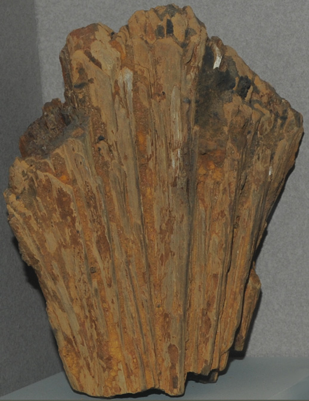

|

| (Fe,Mn)AlPO4(OH)2.H2O
This sample of childrenite is displayed in the Smithsonian Museum of Natural History. Childrenite is a phosphate mineral that contains manganese with the composition (Fe,Mn)AlPO4(OH)2.H2O. The sample at left is about 15 cm wide and is from Mendes Pimental, Minas Gerais, Brazil.
|